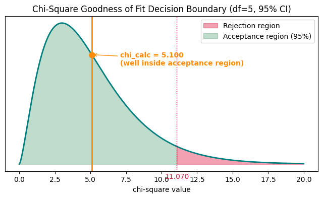
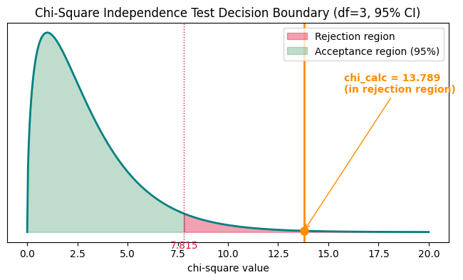
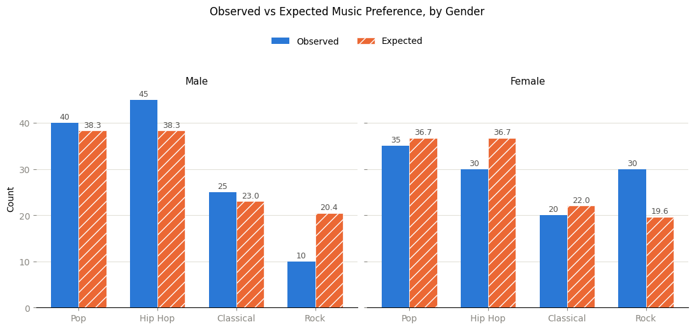

In [1]cell 6
import numpy as np
In [2]cell 7
ob = np.array([22,17,20,26,22,13])
In [3]cell 8
ex = np.array([20,20,20,20,20,20])
In [4]cell 9
result = ob-ex result
Output
array([ 2, -3, 0, 6, 2, -7])
In [5]cell 10
squaredValue = np.square(result) squaredValue
Output
array([ 4, 9, 0, 36, 4, 49])
In [6]cell 11
np.sum(squaredValue/ex)
Output
np.float64(5.1000000000000005)
In [7]cell 13
import scipy.stats as st
n = len(ob) # 6 faces
df = n - 1 # 5
alpha = 0.05
chi_calc = np.sum(squaredValue / ex) # same 5.1 computed above
chi_critical = st.chi2.ppf(1 - alpha, df) # ~11.07
print("df:", df)
print("chi_calc:", round(chi_calc, 4))
print("chi_critical:", round(chi_critical, 4))Output
df: 5 chi_calc: 5.1 chi_critical: 11.0705
In [8]cell 15
if chi_calc > chi_critical:
print("Reject H0 -> H1 is right (the die is NOT fair)")
else:
print("Fail to reject H0 -> H0 holds (no significant evidence the die is biased, at alpha=0.05)")Output
Fail to reject H0 -> H0 holds (no significant evidence the die is biased, at alpha=0.05)
In [9]cell 17
import matplotlib.pyplot as plt
x = np.linspace(0, 20, 500)
y = st.chi2.pdf(x, df)
fig, ax = plt.subplots(figsize=(8, 4))
ax.plot(x, y, color="teal", linewidth=2)
# rejection region - right tail only
x_reject = np.linspace(chi_critical, 20, 100)
ax.fill_between(x_reject, st.chi2.pdf(x_reject, df), color="crimson", alpha=0.4, label="Rejection region")
# acceptance region
x_accept = np.linspace(0, chi_critical, 200)
ax.fill_between(x_accept, st.chi2.pdf(x_accept, df), color="seagreen", alpha=0.3, label="Acceptance region (95%)")
ax.axvline(chi_critical, color="crimson", linestyle=":", linewidth=1)
ax.text(chi_critical, -0.01, f"{chi_critical:.3f}", ha="center", va="top", color="crimson")
ax.axvline(chi_calc, color="darkorange", linewidth=2)
ax.plot(chi_calc, st.chi2.pdf(chi_calc, df), "o", color="darkorange", markersize=8, zorder=5)
ax.annotate(f"chi_calc = {chi_calc:.3f}\n(well inside acceptance region)",
xy=(chi_calc, st.chi2.pdf(chi_calc, df)),
xytext=(chi_calc + 2, max(y) * 0.7),
arrowprops=dict(arrowstyle="->", color="darkorange"),
color="darkorange", fontweight="bold")
ax.legend()
ax.set_yticks([])
ax.set_xlabel("chi-square value")
ax.set_title(f"Chi-Square Goodness of Fit Decision Boundary (df={df}, 95% CI)")
plt.show()
In [10]cell 19
scipy_result = st.chisquare(f_obs=ob, f_exp=ex)
print("scipy chi-square statistic:", scipy_result.statistic)
print("scipy p-value:", scipy_result.pvalue)
print("p-value > alpha (0.05)?", scipy_result.pvalue > alpha, "-> fail to reject H0" if scipy_result.pvalue > alpha else "-> reject H0")Output
scipy chi-square statistic: 5.1000000000000005 scipy p-value: 0.40379845710420864 p-value > alpha (0.05)? True -> fail to reject H0
In [11]cell 6
import numpy as np
In [12]cell 7
row1 = np.array([40,45,25,10])
In [13]cell 8
row2 = np.array([35,30,20,30])
In [14]cell 9
sum_rows1 = np.sum(row1) sum_rows2 = np.sum(row2) sum_rows1, sum_rows2
Output
(np.int64(120), np.int64(115))
In [15]cell 10
sum_rows = row1 + row2 sum_rows
Output
array([75, 75, 45, 40])
In [16]cell 11
sum_row = np.array([sum_rows1,sum_rows2]) sum_row
Output
array([120, 115])
In [17]cell 12
exp = []
for i in sum_row:
for j in sum_rows:
value = (i*j)/235
exp.append(value)
expOutput
[np.float64(38.297872340425535), np.float64(38.297872340425535), np.float64(22.97872340425532), np.float64(20.425531914893618), np.float64(36.702127659574465), np.float64(36.702127659574465), np.float64(22.02127659574468), np.float64(19.574468085106382)]
In [18]cell 13
obj = np.array([40,45,25,10,35,30,20,30]) obj
Output
array([40, 45, 25, 10, 35, 30, 20, 30])
In [19]cell 14
substract = obj-exp substract
Output
array([ 1.70212766, 6.70212766, 2.0212766 , -10.42553191,
-1.70212766, -6.70212766, -2.0212766 , 10.42553191])In [20]cell 15
np.sum(np.square(substract)/exp)
Output
np.float64(13.788747987117553)
In [21]cell 17
import scipy.stats as st
rows = 2
cols = 4
df = (rows - 1) * (cols - 1) # 3
alpha = 0.05
chi_calc = np.sum(np.square(substract) / exp) # same value computed above
chi_critical = st.chi2.ppf(1 - alpha, df) # ~7.815
print("df:", df)
print("chi_calc:", round(chi_calc, 4))
print("chi_critical:", round(chi_critical, 4))Output
df: 3 chi_calc: 13.7887 chi_critical: 7.8147
In [22]cell 19
if chi_calc > chi_critical:
print("Reject H0 -> H1 is right (gender and music preference ARE associated)")
else:
print("Fail to reject H0 -> H0 holds (no significant association, at alpha=0.05)")Output
Reject H0 -> H1 is right (gender and music preference ARE associated)
In [23]cell 21
import matplotlib.pyplot as plt
x = np.linspace(0, 20, 500)
y = st.chi2.pdf(x, df)
fig, ax = plt.subplots(figsize=(8, 4))
ax.plot(x, y, color="teal", linewidth=2)
# rejection region - right tail only
x_reject = np.linspace(chi_critical, 20, 100)
ax.fill_between(x_reject, st.chi2.pdf(x_reject, df), color="crimson", alpha=0.4, label="Rejection region")
# acceptance region
x_accept = np.linspace(0, chi_critical, 200)
ax.fill_between(x_accept, st.chi2.pdf(x_accept, df), color="seagreen", alpha=0.3, label="Acceptance region (95%)")
ax.axvline(chi_critical, color="crimson", linestyle=":", linewidth=1)
ax.text(chi_critical, -0.01, f"{chi_critical:.3f}", ha="center", va="top", color="crimson")
ax.axvline(chi_calc, color="darkorange", linewidth=2)
ax.plot(chi_calc, st.chi2.pdf(chi_calc, df), "o", color="darkorange", markersize=8, zorder=5)
ax.annotate(f"chi_calc = {chi_calc:.3f}\n(in rejection region)",
xy=(chi_calc, st.chi2.pdf(chi_calc, df)),
xytext=(chi_calc + 2, max(y) * 0.7),
arrowprops=dict(arrowstyle="->", color="darkorange"),
color="darkorange", fontweight="bold")
ax.legend()
ax.set_yticks([])
ax.set_xlabel("chi-square value")
ax.set_title(f"Chi-Square Independence Test Decision Boundary (df={df}, 95% CI)")
plt.show()
In [24]cell 23
genres = ["Pop", "Hip Hop", "Classical", "Rock"]
male_exp = np.array(exp[:4])
female_exp = np.array(exp[4:])
color_obs = "#2a78d6" # Observed
color_exp = "#eb6834" # Expected (hatched, since it's a derived/theoretical value)
fig, axes = plt.subplots(1, 2, figsize=(11, 4.5), sharey=True)
bar_width = 0.35
x = np.arange(len(genres))
for ax, obs_vals, exp_vals, title in zip(axes, [row1, row2], [male_exp, female_exp], ["Male", "Female"]):
bars_obs = ax.bar(x - bar_width/2, obs_vals, bar_width, label="Observed", color=color_obs, zorder=3)
bars_exp = ax.bar(x + bar_width/2, exp_vals, bar_width, label="Expected", color=color_exp,
hatch="//", edgecolor="white", linewidth=0.5, zorder=3)
ax.bar_label(bars_obs, fmt="%.0f", padding=2, fontsize=9, color="#52514e")
ax.bar_label(bars_exp, fmt="%.1f", padding=2, fontsize=9, color="#52514e")
ax.set_xticks(x)
ax.set_xticklabels(genres)
ax.set_title(title, fontsize=11, color="#0b0b0b")
for spine in ("top", "right", "left"):
ax.spines[spine].set_visible(False)
ax.grid(axis="y", color="#e1e0d9", linewidth=0.8, zorder=0)
ax.set_axisbelow(True)
ax.tick_params(colors="#898781")
axes[0].set_ylabel("Count")
handles, labels = axes[0].get_legend_handles_labels()
fig.legend(handles, labels, loc="upper center", ncol=2, frameon=False, bbox_to_anchor=(0.5, 1.06))
fig.suptitle("Observed vs Expected Music Preference, by Gender", y=1.14, fontsize=12)
plt.tight_layout()
plt.show()
In [25]cell 25
observed_table = np.array([row1, row2]) # 2 x 4 contingency table
scipy_chi2, scipy_p, scipy_dof, scipy_expected = st.chi2_contingency(observed_table)
print("scipy chi-square statistic:", scipy_chi2)
print("scipy dof:", scipy_dof)
print("scipy p-value:", scipy_p)
print("scipy expected frequencies:\n", scipy_expected)
print("p-value <= alpha (0.05)?", scipy_p <= alpha, "-> reject H0" if scipy_p <= alpha else "-> fail to reject H0")Output
scipy chi-square statistic: 13.788747987117553 scipy dof: 3 scipy p-value: 0.003207271194419188 scipy expected frequencies: [[38.29787234 38.29787234 22.9787234 20.42553191] [36.70212766 36.70212766 22.0212766 19.57446809]] p-value <= alpha (0.05)? True -> reject H0